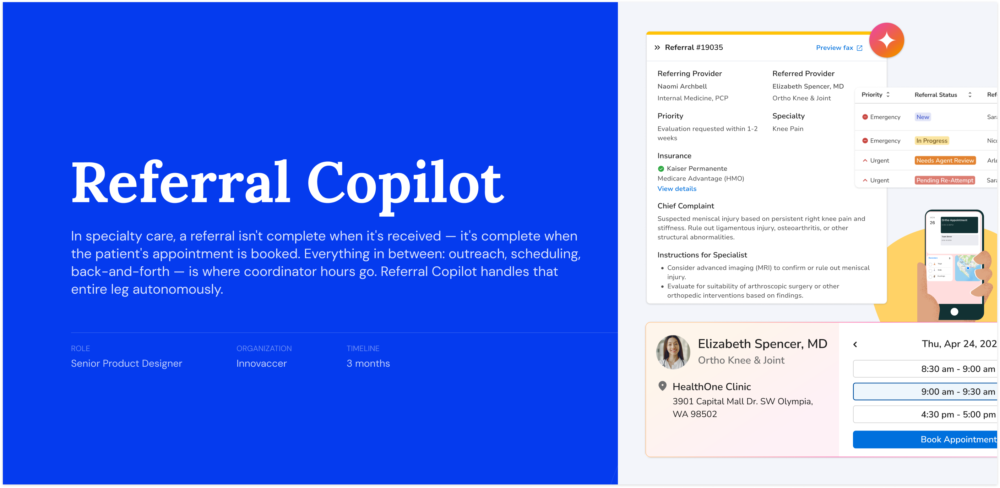
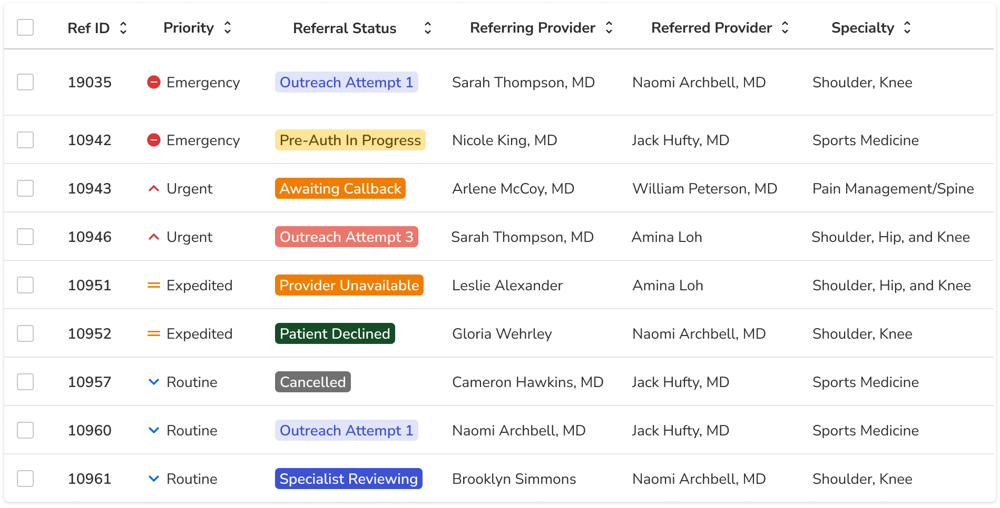

Processing time
68 min
↓ 82% reduction
12 min
End-to-end referral processing time
Referral volume
4×
Volume handled — no added headcount
AI-booked appointments
33%
Fully autonomous — no coordinator needed
Scheduling accuracy
94%
No hallucinations, correct escalation behavior
01
Overview
Referral Copilot is an AI scheduling assistant built for referral coordinators — the people responsible for turning incoming provider referrals into confirmed patient appointments. It targets the most disruptive part of their workflow: patient outreach and appointment booking.
When a referral ticket is ready for initiating appointment booking, the coordinator marks it Ready to Schedule. From that point, the AI takes over — calling the patient, navigating availability, booking the slot, and logging everything back into the referral ticket. No monitoring required. If the AI can't complete it, it escalates to a human with full context intact.
The platform streamlines referral intake, coordination, and scheduling workflows. When pre-authorization is required, coordinators complete it on external systems — a step the platform operates alongside, not within. Not addressed in this MVP, as the core scheduling workflow delivers value independently.
02
Problem
The platform surfaces each referral as a structured ticket. The coordinator reviews it, verifies insurance, confirms pre-auth status — then begins patient outreach. With 30+ referrals active simultaneously, each at its own stage of the scheduling process, managing all the open follow-ups creates constant context-switching.
Every referral in progress demands attention: a patient to reach, a specialist to confirm, a callback to track. The challenge isn't any single referral — it's the volume of open loops running in parallel.
The first column requires expertise. The second is largely execution — and almost entirely where the 68 minutes went. Referral Copilot was designed to take the right column off a coordinator's plate entirely.
A coordinator's active queue — 30+ referrals, at any given moment

Each open loop requires its own tracking, follow-up, and mental context — all managed in parallel.
03
Why It Mattered
01 — Volume vs. Capacity
Specialty practices manage hundreds of referrals monthly — often without dedicated scheduling infrastructure. Up to 70% of routine scheduling interactions are automatable, yet most were still handled manually, one referral at a time.
02 — Automation Opportunity
Clear success condition: appointment confirmed. No clinical judgment required. When routine scheduling shifts to automation, organizations see ~40% savings in operational cost per interaction — and coordinators get their time back for higher-value work.
03 — Misplaced Expertise
These are people trained to navigate insurance, triage urgency, and manage complex cases. Spending the bulk of their day on routine scheduling and outreach wasn't just inefficient — it was the wrong use of their expertise.
04
Our Approach
The core principle: keep humans in control of decisions that require judgment, and remove them from the loop for everything that doesn't. The coordinator reviews, verifies, and decides when a referral is ready. After that, the AI works independently.
Decision 01
Make the handoff a deliberate action — not an automatic one.
We could have triggered AI scheduling automatically once insurance was verified. We didn't. The status update to Ready to Schedule is an intentional act by the coordinator. They choose when to hand off, and they can see that they've done it. In healthcare AI, trust is earned through control — not convenience. This was the trust-building moment we designed around.
Decision 02
Fully async — not just faster. The goal was zero interruption.
A partially async model would still require coordinators to monitor progress and step in unpredictably. That defeats the purpose — it creates a different kind of cognitive load. We designed the AI to work entirely without oversight. When it hits a condition it genuinely can't resolve alone, it escalates back to the coordinator with a fully intact referral and all context preserved — so they can pick up exactly where the AI left off. Those escalation conditions are defined precisely, not as a fallback but as a first-class part of the design. See how they surface in the Solution section.
Decision 03
Close the loop inside the referral ticket — not in a separate tool.
After each AI interaction, the call transcript, AI-generated summary, and appointment details are written back into the referral's activity feed automatically. The referral ticket is self-contained and auditable. Coordinators don't need to go anywhere else to know what happened — and neither do supervisors, compliance teams, or whoever reviews the referral next.
05
Solution
AI Appointment Scheduling
Once a referral is marked Ready to Schedule, it enters the AI's work queue. The coordinator moves on. The AI handles the entire outreach and booking flow — calling the patient, confirming a provider, locking in a slot — and only surfaces back to the human when it hits a condition it genuinely can't resolve alone.
This wasn't about making the outreach faster. It was about removing coordinators from the loop entirely for cases where no human judgment is needed.
AI Scheduling Flow
End-to-end AI-led scheduling from handoff to confirmation
Coordinator marks Ready to Schedule
Referral enters the AI work queue
AI initiates call to patient
Up to 3 call attempts
Patient consents to AI scheduling
Consent confirmed before proceeding
Slot matched to patient preference
Checks availability in preferred window
Provider confirmed with patient
Patient accepts suggested provider
Appointment confirmed
SMS sent · Call summary logged · Referral closed
Escalate to Coordinator
Referral moves out of AI queue
Alert generated
Coordinator notified in real time
Context attached
Full call log, notes and reason included
Coordinator action
Takes over and updates referral status
Escalation Reasons
No answer
No answer after 3 attempts
Patient declines
Patient declines AI scheduling
No slots available
No slots in preferred window
Provider issues
Provider unavailable or declined
Patient requests human
Patient asks to speak with an agent
Other exceptions
Any scenario AI cannot resolve
The referral queue — priority-coded rows with live status. "Pending Re-Attempt" and "Needs Agent Review" surface escalations immediately.
Post-Scheduling Summary
Healthcare workflows often end with a documentation burden: someone has to record what happened, where, and by whom. We removed that step. When the AI completes a scheduling attempt — whether it books or escalates — the referral ticket updates itself automatically.
Coordinators don't have to take notes, switch tools, or reconstruct what was said. The referral ticket is self-complete.
If a coordinator wants to review what the AI said or did, it's all there. The system is legible — not a black box.
Call summary, transcript, and appointment details — written back into the ticket automatically.
The Foundation
Designing Referral Copilot made one thing clear — the existing ticket would create compounding problems, not just for this workflow, but for everything built after it. The layout had grown by accretion: designed for one persona, quietly stretched to serve others, with no structural revisit. I brought this to design leadership, product, and engineering with a clear position: we shouldn't build on top of a foundation that will block us. The cost of getting this right now was far lower than the cost of patching it with every future feature.
The pitch wasn't "let's redesign the page." It was "let's establish a shared foundation." A modular ticket layout that could serve coordinators, payers, providers, and contact center agents from the same structure — without a custom design for each persona. That argument landed, and the redesign became part of the project scope.
The existing view had no clear information hierarchy, no structural space for AI-generated context, and no separation between primary actions and supporting data. The redesign established all three — making the ticket layout a foundation the platform could grow on, not just a screen that served one workflow.
The same ticket layout now serves:
06
Outcomes
| Metric | Before | After |
|---|---|---|
| End-to-end referral processing time | 68 min | 12 min |
| Referral volume handled | 1× capacity | 4× — no additional headcount |
| Appointments booked autonomously by AI | 0% | 33% |
| AI scheduling accuracy | — | 94% — no hallucinations, correct escalation behavior |
The other 2 in 3 still benefit — coordinators reach them faster because they're not managing the full outreach queue manually.
The 68-minute figure reflects total referral processing time — not just the scheduling call. It includes all the back-and-forth, repeated outreach attempts, and documentation overhead. Cutting it to 12 minutes meant compressing almost everything after the insurance verification step.
Coordinators shifted their attention to the cases that needed it: complex insurance situations, missing clinical information, escalations from the AI, and referrals requiring human judgment to resolve. The AI handled the volume. Humans handled the edge cases.
KPIs tracked in production
Call abandonment reduction
Fewer patients lost mid-scheduling due to hold time or unavailability
% of calls automated
Share of scheduling interactions completed without human intervention
First-call resolution rate
Appointments booked in a single AI-patient interaction
FTE savings per 10k calls
Coordinator capacity freed by AI-handled scheduling volume
Cost per resolved call
Total operational cost of a completed scheduling interaction
Referral conversion rate
Referrals that result in a confirmed patient appointment
What the MVP became
Referral Copilot's scheduling engine is now part of Comet by Innovaccer — an omnichannel AI access center for specialty care, serving orthopedic, cardiology, and multi-specialty networks.
07
Customer Feedback
Feedback from the orthopedic and specialty networks using the platform.
"
Innovaccer's AI Referral Management solution aligns seamlessly with our commitment to efficiency and innovation. The platform's referral insights offer the clarity we need to continuously improve our processes and ensure patients receive the care they need faster.
"
Before, referrals were scattered across systems. Now scheduling, support, and performance are unified — finally giving us visibility across all 12 clinics.
"
We no longer chase referrals across systems. Our cardiology patients get seen faster, the team spends less time on paperwork, and every referral is visible from start to finish.
08
Reflections
01
The goal wasn't speed — it was removal from the loop.
Making outreach faster for coordinators would still leave them managing it. The design choice that mattered most was taking the entire outreach loop off their plate for cases that didn't need their judgment. That distinction — faster vs. removed — shaped every interaction decision in the product.
02
Trust in AI is built through control, not convenience.
An automatic handoff would have been simpler to build. But coordinators needed to feel agency over when the AI acts on their behalf — especially for something as consequential as calling a patient. The explicit Ready to Schedule status update gave them that. In healthcare, adoption depends on trust. Trust depends on feeling in control.
03
Design the escalation path as carefully as the happy path.
The six escalation conditions aren't edge cases — they represent a significant share of real scheduling attempts. Each one needed to hand back a fully intact referral with all context preserved. A poorly designed escalation leaves the coordinator confused about what happened. A well-designed one lets them pick up seamlessly. Getting that right was as important as the confirmation flow.
04
Platform thinking has to start before the feature does.
Redesigning the referral ticket as a modular foundation — not just a better screen for this one workflow — meant the same work could serve multiple personas as the platform grows. That kind of design leverage only happens when you treat the ticket layout as infrastructure, not just UI. It has to be decided early, or each new use case becomes a patch on top of the last one.